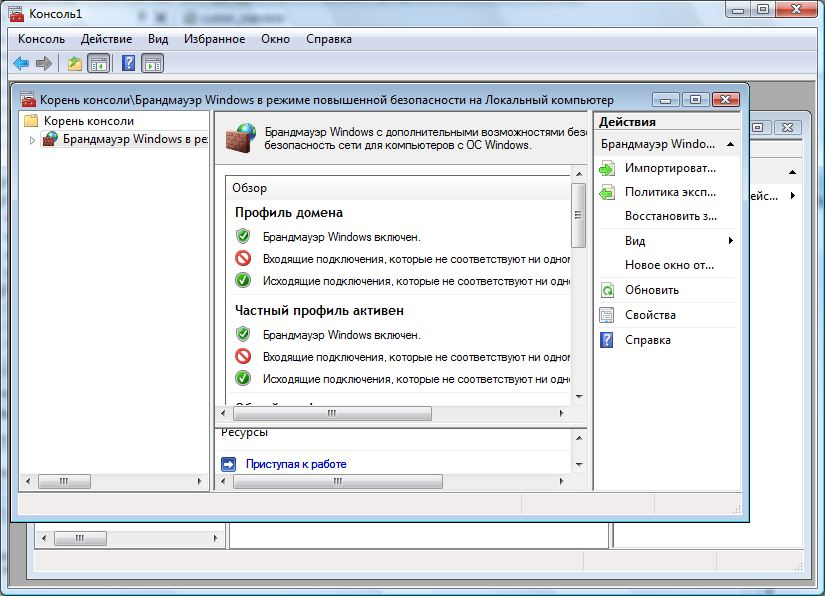
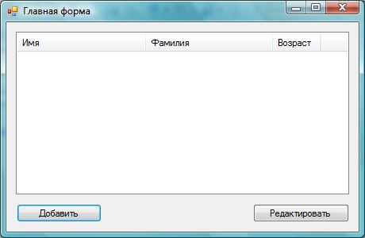
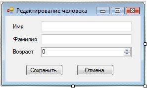

| Тема 7. Формы | ||
| Назад | ||
|
В этой главе мы глубже погрузимся в работу с формами и узнаем, как лучше передавать данные между формами, как организовывать взаимодействие между формами и как управлять ими. Класс Form — это больше, чем просто элемент управления или контейнер для элементов управления. Существуют два типа приложений: MDI (Multi Document Interface, многодокументный интерфейс) и SDI (Single Document Interface, интерфейс с одним документом). Несмотря на то, что Microsoft рекомендует использовать однодокументные приложения, многодокументные окна все еще существуют, даже в самом Windows. Ярким примером многодокументного приложения в Windows является консоль управления. Выберите меню Пуск | Выполнить (для Windows Vista и Windows 7 просто выбираем Пуск и вписываем команду в строку поиска) и введите mmc. Вы увидите программу, внутри главного окна которой могут находиться другие окна (рис. 11.1). Если вы работаете с компьютерами давно, то наверно помните, что программы офисного пакета, — такие как Microsoft Word, тоже когда-то были выполнены в виде многодокументных окон. В принципе, интерфейс Internet Explorer тоже можно отнести к многодокументному приложению, как и среду разработки Visual Studio. Ведь в этих программах внутри главного окна можно открыть сразу несколько Web-страниц или файлов с исходным кодом — просто они отображаются не в виде окон внутри главного контейнера, а в виде вкладок. Такой метод считается более интуитивно понятным, и именно его стараются применить в большинстве случаев. Интерфейс с использованием документов в виде вкладок придется программировать самому, а часть функций по работе стандартного MDI-интерфейса берет на себя сама ОС и Framework. Несмотря на то, что рекомендуется использовать интерфейс с одним документом, мы рассмотрим и многодокументный интерфейс, раз уж он существует, но основной упор будет сделан именно на интерфейс с одним документом, — как на рекомендуемый. Рекомендации желательно соблюдать, потому что их придумывают не просто так, чтобы сделать нашу жизнь хуже. Рекомендации — это личный опыт профессионалов.
 Рис. 11.1. Пример многодокументного приложения 11.1. Диалоговые окнаКлассическая задача — получение ввода от пользователя — чаще всего решается через диалоговые окна. Например, у вас есть форма для отображения списка людей, и вы хотите иметь возможность добавления людей в список и редактирования их. Где расположить поля ввода для параметров добавляемого или редактируемого объекта? Можно в том же окне, где находится список, но лучше это делать в отдельном окне редактирования. Давайте рассмотрим это на примере. Для примера нам понадобится новое WinForms-приложение, на главной форме которого мы поместим компонент ListView для хранения списка и две кнопки для добавления новой записи и редактирования выделенной. В списке ListView нужно:
Такую главную форму можно увидеть на рис. 11.2. Теперь нам понадобится дочерняя форма или диалоговое окно для редактирования элементов. Щелкните правой кнопкой мыши по имени проекта в панели Solution Explorer и в контекстном меню выберите Add | New Item. В открывшемся окне найдите и выделите Windows Form и в поле Name введите имя для диалогового окна — например, EditPersonForm.
 Рис. 11.2. Форма будущей программы Сразу же поместите на форму две кнопки для сохранения и отмены изменений, а также три поля ввода: для изменения имени, фамилии и возраста. Для изменения возраста можно использовать компонент NumericUpDown, который хорошо подходит для редактирования чисел. Мой вариант формы можно увидеть на рис. 11.3, но ваш может и отличаться.
 Рис. 11.3. Форма диалогового окна Теперь несколько рекомендаций по оформлению диалоговых окон, которым не обязательно следовать, но которые чаще всего положительно сказываются на удобстве использования программ:
Еще пару манипуляций нужно сделать над кнопками. Для кнопки Сохранить установите свойство DialogResult в OK, а для кнопки Отмена установите это же свойство в Cancel. Теперь, если окно отображается в модальном режиме, то по нажатию любой из этих кнопок окно будет закрыто, а форма вернет в качестве результата то, что мы указали для кнопок в свойстве DialogResult. Теперь посмотрим, как может использоваться эта форма. Для начала в коде формы добавим три свойства, через которые будет происходить обращение к полям ввода: public string FirstName
{
get { return firstNameTextBox.Text; }
set { firstNameTextBox.Text = value; }
}
public string LastName
{
get { return lastNameTextBox.Text; }
set { lastNameTextBox.Text = value; }
}
public int Age
{
get { return (int)ageNumericUpDown.Value; }
set { ageNumericUpDown.Value = value; }
}
Добавленные здесь свойства являются посредниками между диалоговым окном редактирования и главным окном, из которого будет вызываться это диалоговое окно. Теперь все готово, чтобы написать код, который будет создавать новые элементы в списке и редактировать их. Для начала создайте обработчик события Click для кнопки Добавить главной формы и напишите в нем содержимое листинга 11.1. Листинг 11.1. Код добавления нового элемента в список private void addPersonButton_Click(object sender, EventArgs e)
{
// создаем форму
EditPersonForm editForm = new EditPersonForm();
// отображаем форму
if (editForm.ShowDialog() != DialogResult.OK)
return;
ListViewItem newItem =
personsListView.Items.Add(editForm.FirstName);
newItem.SubItems.Add(editForm.LastName);
newItem.SubItems.Add(editForm.Age.ToString());
}
В самом начале создается экземпляр класса EditPersonForm, а этим классом является форма. Следующим этапом идет отображение формы editForm.ShowDialog(), и тут же проверяется результат, который возвращает метод ShowDialog(). Если результат не равен DialogResult.OK (а этот результат возвращает кнопка Сохранить в диалоговом окне), то выполнение метода прерывается. После этого создается новый элемент для списка ListView и заполняются два подэлемента, которые будут отображаться в колонках. Для чтения данных из объекта диалогового окна editForm используются свойства, которые мы написали. Теперь посмотрим на метод, который выполняет редактирование выделенного в списке элемента. Этот код вы можете увидеть в листинге 11.2. Листинг 11.2. Редактирование с помощью диалогового окна private void editPersonButton_Click(object sender, EventArgs e)
{
if (personsListView.SelectedItems.Count == 0)
return;
// для удобства сохраняем выделенный элемент в локальной переменной
ListViewItem item = personsListView.SelectedItems[0];
// создаем форму
EditPersonForm editForm = new EditPersonForm();
// заполняем поля формы значениями
editForm.FirstName = item.Text;
editForm.LastName = item.SubItems[1].Text;
editForm.Age = Convert.ToInt32(item.SubItems[2].Text);
if (editForm.ShowDialog() != DialogResult.OK)
return;
item.Text = editForm.FirstName;
item.SubItems[1].Text = editForm.LastName;
item.SubItems[2].Text = editForm.Age.ToString();
}
|
||
| Конспект подготовлен Бакулиным А. М. 2022 год. | ||